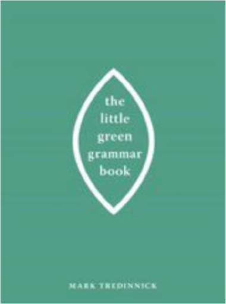

The Little Green Grammar BookMark Tredinnick  What really goes on inside a sentence? What is your subject, and where is your verb, and what is its tense, and where is your modifier, and why does it matter? Where do you need a comma, and where do you not? Why are dashes and semicolons so misunderstood? When is it which and when is it that? In The Little Green Grammar Book, Mark Tredinnick asks and answers the tough grammar questions—big and small—with the same verve and authority readers encountered in The Little Red Writing Book. The Little Green Grammar Book does for grammar what The Little Red Writing Book did for style. It will have you writing like a writer in no time.  The Visual Display of Quantitative InformationEdward R. Tufte The Visual Display of Quantitative InformationEdward R. Tufte Hardcover: 200 pages Publisher: Graphics Pr; 2nd edition (May 2001) Language: English ISBN-10: 0961392142 ISBN-13: 978-0961392147 Product Dimensions: 10.7 x 8.9 x 0.8 inches  The Hare with Amber Eyes: A Hidden Inheritance. Edmund de WaalEdmund de Waal The Hare with Amber Eyes: A Hidden Inheritance. Edmund de WaalEdmund de Waal This is the definitive illustrated edition of the international bestseller with gorgeous new photography of the celebrated netsuke collection, and sumptuous full-colour images hand-picked by Edmund de Waal from his family archive 264 Japanese wood and ivory carvings, none of them bigger than a matchbox: Edmund de Waal was entranced when he first encountered the collection in his great-uncle Iggie's Tokyo apartment. When he later inherited the 'netsuke', they unlocked a story far larger and more dramatic than he could ever have imagined. From a burgeoning empire in Odessa to fin de siecle Paris, from occupied Vienna to post-war Tokyo, Edmund de Waal traces the netsuke's journey through generations of his remarkable family against the backdrop of a tumultuous century.  The Student's Guide to Cognitive NeuroscienceJamie Ward The Student's Guide to Cognitive NeuroscienceJamie Ward Reflecting recent changes in the way cognition and the brain are studied, this book provides a comprehensive and student-friendly guide to cognitive neuroscience. Following an introduction to neural structure and function, all the key methods and procedures of cognitive neuroscience are explained, with a view to helping students understand how they can be used to shed light on the neural basis of cognition.  Afternoon TeaAustralian Women's Weekly Afternoon TeaAustralian Women's Weekly Following the best-sellers in this series, Cupcakes & Fairycakes and Easy Cupcakes by Colour, comes the prettiest little book ever. Afternoon tea is the ultimate in femininity - containing all the delights of the tea table. Finger sandwiches, scones, pastries, little cakes, big cakes, biscuits and slices are all here as well as information on how to make a proper pot of tea and how to set the tea table. This is every girl's dream book!  VegetarianAustralian Women's Weekly VegetarianAustralian Women's Weekly You can never have too many recipes for quick and healthy mid-week meals. This collection of recipes offers healthy vegetarian meals that are quick to put on the table when there are only 30 minutes to spare before the family dies of hunger. Each recipe includes a photograph, simple instructions, and has been triple-tested by The Australian Women's Weekly Test Kitchen to ensure success. |


 Made with Delicious Library
Made with Delicious LibrarySpringfield, State zipflap congrotus delicious library Doddridge, Edward